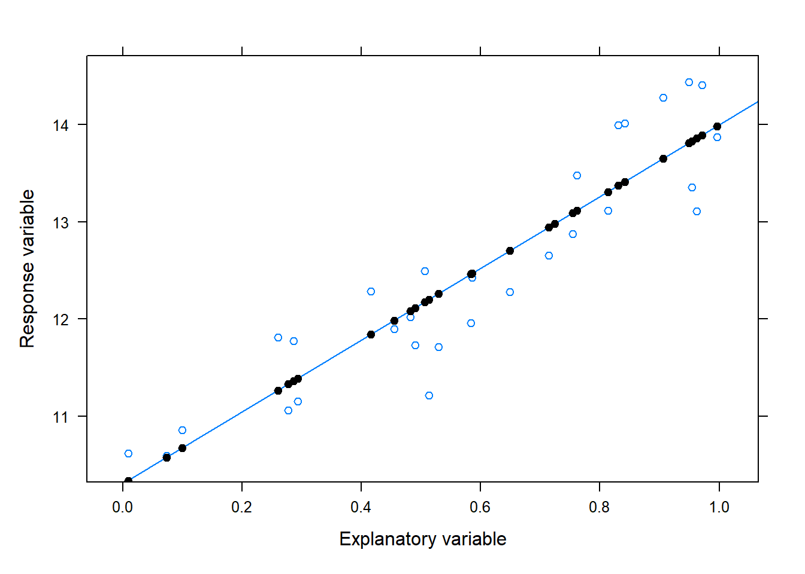
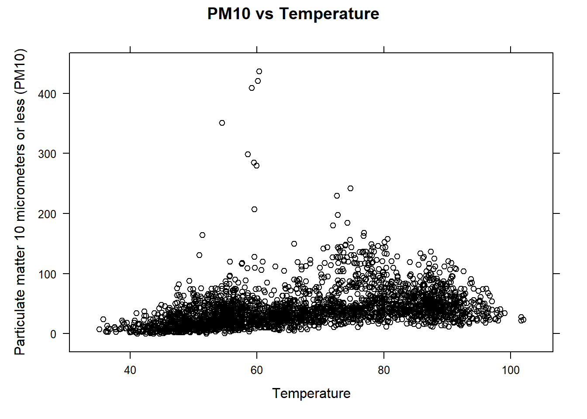
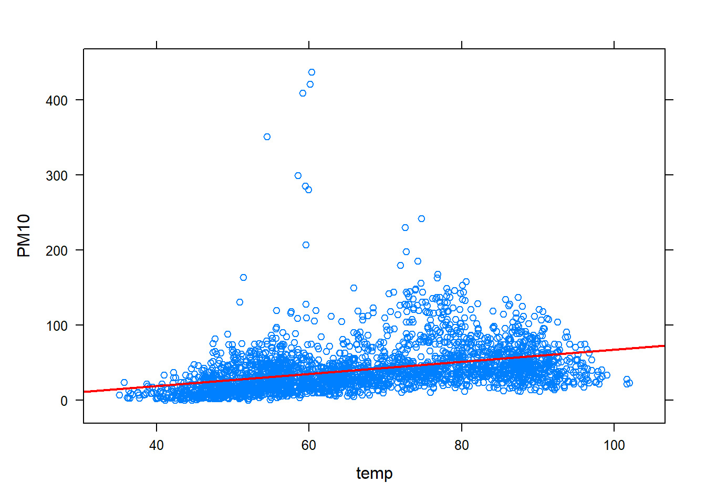
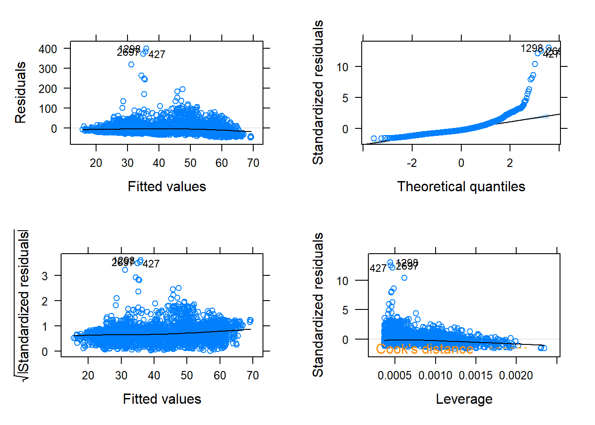
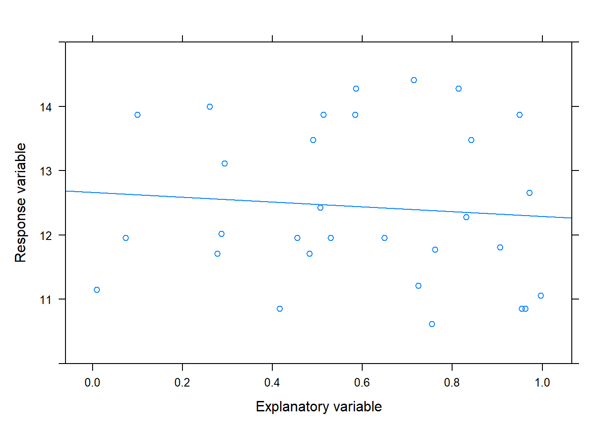

Section 10.2 addresses how to investigate the relationship between two numerical variables by looking at a scatterplot. Simple linear regression (SLR) is a statistical method used to model the linear relationship between two numerical variables, where one variable is the response variable and the other is the explanatory variable. SLR is a special case of linear regression, which models the relationship between two or more variables by fitting a linear equation to the observed data. This section focuses on SLR, which involves only one explanatory variable.

Figure 14.1: Example of a linear relationship with the estimated or best fit SLR line with the predicted values shown as black points on the line
Notation
We start with some required notation and definitions: Let \(y\) denote the response variable and \(x\) denote the explanatory variable. The SLR model is of the form:
\[y = \beta_0 + \beta_1 x + \varepsilon\]
where:
\(\beta_0\) is the true intercept, which represents the value of \(y\) when \(x\) is equal to 0.
\(\beta_1\) is the true slope, which represents the average change in \(y\) for a unit increase in \(x\).
\(\varepsilon\) is the random error term, which represents the random variability about the line in the relationship between \(x\) and \(y\) that is not accounted for by the linear regression model.
The SLR model assumes that the value of \(y\) is linearly related to \(x\) via the line \(\beta_0 + \beta_1 x\). However, the observed \(y\) values deviate randomly from this line, as quantified by an error term. On average, the value of \(y\) for a given value of \(x\) is \(\beta_0 + \beta_1 x\). The random error term signifies that other factors, such as measurement errors, unmeasured variables, or inherent variability in the data, may influence the response variable and are not captured or explained by the estimated SLR line
Note that the line shown in the above scatterplot is the estimated SLR line denoted by \(\hat{y} = b_0 + b_1 x\).
Notation
Note the following notation regarding the estimated SLR line:
\(\hat{y}\) is the predicted/fitted value of \(y\) for a given value of \(x\).
A value of \(\hat{y}\) represent the estimated expected/average/mean value of the response (\(y\)) at a given value of \(x\).
\(b_0\) is the estimated intercept
\(b_1\) is the estimated slope.
The slope estimate represents the change in \(\hat{y}\) corresponding to a 1-unit increase in \(x\)1.
Due to the random error in the relationship between the explanatory and response variables, the estimated line may not pass through every data point. The estimates of \(b_0\) and \(b_1\) are obtained using the method of least squares, which minimizes the sum of squared differences between the observed values of \(y\) and predicted values \(\hat{y}\).
Notation
\(e\) is the difference between the observed value of the dependent variable (\(y\)) and the predicted value (\(\hat{y}\)) and it is called a residual.
The residuals represent the unexplained variation in the dependent variable that is not accounted for by the estimated SLR line.
Now that some basic of SLR have been covered, this section illustrates common key aspects of SLR, including:
Fitting the SLR model to data using R, model diagnostics, and interpreting the fit.
Performing a t-based test or a randomization test to determine the significance of the linear relationship between the two variables.
Constructing a t-based confidence interval for the slope of the regression line.
Applying basic remediation approaches.
For inferential methods to provide meaningful results, several assumptions are made about the data on which the method is intended to be used.
Data assumptions
The methods discussed here assume one or more of the following assumptions about the data:
Assumption 1. Independence of the observations. This means that the value of one observation should not be influenced by the value of another observation.
Assumption 2. No influential outliers. The data should not contain any influential outliers2 that significantly affect the estimate SLR line.
Assumption 3. Normality or large sample. The residuals should be normally distributed if small sample.
Assumption 4. Equal variance or spread. The spread of observed values across the values of the explanatory variable should be roughly constant.
Assumption 5. The variables are linearly related, meaning that a straight line can accurately represent the trend in the scatterplot.
While these assumptions are assessed below with a case study, assumption 1 can be assessed using residual plots along with the study design. Assumption 2 can be examined using a histogram or boxplot of the data or residuals, assumption 3 with normal QQ-plot of the residuals, assumption 4 with a scatterplot of the residuals against the predicted values, and assumption 5 with a scatterplot of the data.
14.1 Fitting the SLR model and model diagnostics.
The function lm() is used to fit the SLR model to the data.
R functions
### lm( y ~ x , data )
# y: replace y with the name of the resposne (measured)
# variable of interest
# x: replace x with the name of the explantory variable
# data: set equal to a dataframe that is in tidy form
#
Note that the R functions used in these modules often have identical arguments, which will no longer be described in this module. The lm() function provides more than just the values of \(b_0\) and \(b_1\), and the illustrations below show how to use it to create an lm object that contains useful information. To summarize the SLR model fit, extract fitted values, or extract residuals from the lm object, we use the summary(), predict(), and residuals() functions on the lm object, respectively. The function xyplot() can be used to plot the data along with the estimated SLR line by specifying an argument called type:
R functions
### summary( lm object )
# lm object: An object saving the result of usuing
# the lm function.
#
### predict( lm object )
#
### residuals( lm object )
#
### xyplot( y ~ x, data, type=c("p", "r") )
#
The summary() function will provide a lot of information, including the values of \(b_0\) and \(b_1\).
To perform model diagnostics (process of of assess the validity of the assumptions of data) with will use xyplot() in a different way. The R package tactile expands the functionality of xyplot() so that it creates a set of residual plot by specifying only an lm object. Specifically, for a SLR model fit, it will provide the following residual plots:
Residuals vs. predicted values: This residual plot shows the relationship between the residuals and the predicted values. The plot helps to assess assumptions 1, 2, and 4. A plot that shows no clear pattern or trend, no outlying observations, and a spread that is fairly constant suggest that these assumptions are reasonable. If there is a pattern or structure in the residual plot, this suggests that there may be dependence between the observations. Similarly, if spread of residuals change as a function of predicted values, it suggests non-constant variance.
Normal QQ-plot of the residuals: The plot helps to assess assumption 3. If the residuals are normally distributed, the points on the plot will roughly follow a straight line.
Standardized residuals vs. predicted values. This residual plot is generally referred to as a scale-location plot. This plots the square root of the standardized residual versus the predicted values. Note that standardization has these transformed residuals to have a mean of zero and a standard deviation of one. This allows for comparisons between models with different explanatory variables or dependent variables on different scales. It is analyzed and interpreted in the same manner as the residuals vs. predicted values plot.
Residuals vs. leverage plot. This plot shows the leverage (the degree to which an observation affects the estimated slope of the fitted regression line) against the standardized residuals. Although it helps identify potential influential outliers (such outliers have high leverage and correspond to a large residual), a plot that shows no clear pattern or trend and and a spread that is fairly constant suggest that will suggest assumptions 1 and 4 are reasonable. If the spread of standardized residuals changes as a function of leverage, it indicates non-constant variance. Similarly, a trend or pattern as a function of leverage would indicate a violation of assumption 1.
Note
We fit the SLR model to the data described in the case study provided in Chapter 3 to model the linear relationship between Pm10 and temperature. The data provided in the case study consists of several variables (PM10, AQI, …, county, and City.Name) with PM10 and temp being the variables of interest.
To begin, we import the data, and then one would explore the data using numerical and graphical data summaries. Numerical and graphical data exploration for bivariate data are covered in other modules but we start by assessing the linearity of the relationship.
# Import data PM10df<-read.csv("datasets/DailyPM10.2021.csv")# obtain the names of the variablesnames(PM10df)#> [1] "PM10" "AQI" "temp" "Latitude" "Longitude" "windspeed"#> [7] "state" "county" "City.Name"library(lattice)# provides the xyplot() functionxyplot(PM10~temp , data=PM10df , xlab="Temperature" , ylab="Particulate matter 10 micrometers or less (PM10)" , main="PM10 vs Temperature" , col="black")# default color is "blue")

The scatterplot reflect a positive linear trend with some outlying PM10 measurements. To address the presence of outliers when conducting inference, we will consider some approaches in the last section. For now, we will proceed with fitting the SLR model in R for the purpose of illustration. This will involve using the lm() to fit the model and xyplot() to show the estimated SLR line:
# The function will require the following information:# y: replace with 'PM10'# x: replace with 'temp'# data: set equal to a 'PM10df'lm(PM10~temp, data=PM10df)#> #> Call:#> lm(formula = PM10 ~ temp, data = PM10df)#> #> Coefficients:#> (Intercept) temp #> -12.7702 0.8053# xyplot now includes a new argument called type. # Set type=c("p", "r"). This tells xyplot() to plot both the # points and the estimated line. A few additional# aesthetic arguments are provided below as well. xyplot(PM10~temp, data=PM10df, type=c("p", "r"), # ensures both data points and est. reg. line is plotted col.line ="red", # make the line red lwd=2)# make the line wider

The output provides \(b_0=-12.77\) and \(b_1=0.8053\). With \(b_1=0.8053\), it is estimated that PM10 levels (the response), on average, changes by \(.8053\) when temperature (the explanatory) is increased by 1 degree. The lm() function provides much more than just these values. To extract other information, the result from lm() must be stored. Below the resulting lm() fit is stored and then the summary() is applied to this object. The functions residuals() and predict() are also illustrated below.
# Store lm() fit in an object, call it PM10fitPM10fit<-lm(PM10~temp, data=PM10df)# PM10fit is called an lm objectsummary(PM10fit)#> #> Call:#> lm(formula = PM10 ~ temp, data = PM10df)#> #> Residuals:#> Min 1Q Median 3Q Max #> -47.88 -16.94 -7.25 8.58 401.17 #> #> Coefficients:#> Estimate Std. Error t value Pr(>|t|) #> (Intercept) -12.77025 2.67450 -4.775 1.89e-06 ***#> temp 0.80532 0.03899 20.655 < 2e-16 ***#> ---#> Signif. codes: 0 '***' 0.001 '**' 0.01 '*' 0.05 '.' 0.1 ' ' 1#> #> Residual standard error: 30.77 on 2722 degrees of freedom#> (391 observations deleted due to missingness)#> Multiple R-squared: 0.1355, Adjusted R-squared: 0.1352 #> F-statistic: 426.6 on 1 and 2722 DF, p-value: < 2.2e-16# extract the residuals from PMfit# and store in an object called PM10resPM10res<-residuals(PM10fit)# extract the predicted values from PMfit# and store in an object called PM10predictPM10predict<-predict(PM10fit)
Note that the summary() provides the following table:
Estimate
Std. Error
t-value
p-value
(Intercept)
\(b_0\)
\(SE_{b_0}\)
\(T_{b_0}\)
p-value\(_{b_0}\)
explanatory
\(b_1\)
\(SE_{b_1}\)
\(T_{b_1}\)
p-value\(_{b_1}\)
The terms \(SE_{b_0}\) and \(SE_{b_1}\) are the standard errors for \(b_0\) and \(b_1\). The table also provides the coefficient of determination or \(R^2\) (Multiple R-squared: 0.1355). The value of \(R^2\) is the sample correlation, \(r\), squared. In terms of its interpretation, \(R^2\), measures how well the estimated SLR line fits the data. A higher value of \(R^2\) indicates a better fit, meaning that more of the variance in the response variable can be explained by the explanatory variable. However, a high or low value of does not necessarily imply a significant linear relationship. Here, temperature explains \(13.55\)% of the total variation observed in PM10 measurements. In other words, the SLR model accounts for only a small fraction of the variability in PM10 measurements, and there may be other variables that are not included in the model that also affect PM10 levels. The rest of the information provided by summary() will be addressed as needed throughout the rest of these sections.
The next sections cover different inferential methods for a SLR, and they require for the assumptions of the data to be reasonable. Next, we perform model diagnostics to assess the model assumptions with the help of xyplot() after loading the tactile R package:
# This package provides diagnostic # plots using xyplot()library(tactile)# To create a set of pre-specified # residual plots, provide the lm object# to xyplot()xyplot(PM10fit)

Figure 14.2: Diagnostic plots
See previous video.
The scatterplot showed a linear trend in the data, so assumption 5 (linearity) is reasonable. The residual plots provided by xyplot() (excluding the normal QQ-plot) will have a black (not necessarily linear) trend line that is lowess smoother3. Each plot is analyzed and interpreted below:
The upper and lower left plots display the residuals against the predicted value and the squared rooted standardized residuals against the predicted values, respectively. The plot shows the following characteristics:
No clear strong patterns or trends are evident in either plot so assumption 1 may be considered reasonable.
There are a few potential outliers and the variability of the residuals is not constant across the predicted values, so assumptions 2 and 4 are questionable.
The upper right plot is a normal QQ-plot of the residuals4 and it suggests that residuals are not approximately normality distributed but the sample size is large, so assumption 3 is met
The lower right plot shows the standardized residuals against the leverage. The presence of outliers, which are also visible in other residual plots, can be seen in this plot. Cook’s distance5 of 1/2 and 1 will appear as orange contour lines if any values values have a Cook’s distance exceeding these numbers, but no leverage values exceed a Cook’s distance of 1. The plot also shows that the variability in residuals decreases as leverage increases, suggesting that the non-constant assumption of the SLR model is violated.
Overall, not all data assumptions are met for the SLR model. In such cases, we say the model did not pass the model diagnostics. Possible remedial measures will be discussed in the last section. For now, we will proceed with this model for the purpose of illustrating inferential methods, as if it were appropriate for the data.
14.2 Testing the significance of the linear relationship using t-based methods.
The focus in this section is on is on inference for \(\beta_1\) (the true slope), where \(\beta_1\) represents the change in the average value of \(y\) when \(x\) is increased by 1-unit. The t-test for the slope of a regression line is a widely used hypothesis test to assess the significance of a linear relationship between two variables. Specifically, test is be used to determine if the true slope \(\beta_1\) is significantly different from zero, based on the observed value of \(b_1\). It is important to note that the observed value of \(b_1\) can vary. If a study were replicated, the value of \(b_1\) would likely be different. The use of inferential methods allows us to account for this variability and make statistically valid conclusions about the true slope \(\beta_1\). A t-based confidence interval can be constructed for \(\beta_1\) and it provides a range of plausible values for the true slope at a specified significance level. These methods are generally referred to as t-based methods for the slope.
The t-test for the slope of a regression line requires that certain assumptions (1, 2, 3, 4, and 56) about the data are reasonable. The test statistic for this t-test is given by:
\[T=\frac{b_1-\beta_1}{SE_{b_1}} \]
Here, \(SE_{b_1}\) represents the standard error of \(b_1\)7. Our primary interest is in determining if there is a significant linear relationship (association) between the explanatory variable and response variable, which translate to \(\beta_1\neq 0\). Consequently, the null and alternative hypotheses are:
\[H_0: \beta_1=0 \qquad H_a: \beta_1 \neq 0\]
Note that when two variables are linearly related or associated, it means that they are correlated, and when two variables are correlated and linearly related, it implies that they have a linear relationship or association. Under \(H_0\), the null distribution of the test statistic \(T\) follows a t-distribution with \(n-2\) degrees of freedom, where \(n\) is the sample size. This distribution is used to compute the p-value. The function lm() computes the test statistic and p-value for the t-test for a linear association in a SLR, and the results are provided by the summary() output. Recall that the summary() function provides a table with relevant information, including the test statistic and p-value for the t-test, as well as other statistics like the coefficient estimates and standard errors:
Estimate
Std. Error
t-value
p-value
(Intercept)
\(b_0\)
\(SE_{b_0}\)
\(T_{b_0}\)
p-value\(_{b_0}\)
explanatory
\(b_1\)
\(SE_{b_1}\)
\(T_{b_1}\)
p-value\(_{b_1}\)
Here, \(T_{b_1}\) and p-value\(_{b_1}\) refer to the test statistic for the slope and two-sided p-value\(_{b_1}\), respectively for testing if \(\beta_1\neq 0\). The function lm() can also be utilized to obtain a confidence interval (CI) for the true slope \(\beta_1\). To obtain a CI, apply the confint() function to the resulting lm object.
R functions
### confint( lm object , parm , level)
# lm object: An object saving the result of usuing
# the lm function.
# parm: Set equal to 2
# level: Set to desired confidence level.
#
Note
We apply an t-test to the data described in the case study from Chapter 3 to determine if there is a significant linear association between PM10 and temperature levels at \(\alpha=.05\). Recall that not all the required assumptions are met, but we perform the test for the purpose of illustration. Let \(\beta_1\) denote the true slope in the linear association between PM10 and temperature. Since the aim is to determine if there is a significant linear relationship or association, the hypothesis is
\[H_0: \beta_1=0 \qquad H_a: \beta_1 \neq 0\]
The following code uses lm() and summary() to obtain compute the test statistic and the corresponding p-value for a t-test:
# PM10fit was created in the previous section# but the code is given here as reminder. # Below, the result from lm() is # stored in an object, called PM10fitPM10fit<-lm(PM10~temp, data=PM10df)# summarize the lm object, PM10fit. summary(PM10fit)#> #> Call:#> lm(formula = PM10 ~ temp, data = PM10df)#> #> Residuals:#> Min 1Q Median 3Q Max #> -47.88 -16.94 -7.25 8.58 401.17 #> #> Coefficients:#> Estimate Std. Error t value Pr(>|t|) #> (Intercept) -12.77025 2.67450 -4.775 1.89e-06 ***#> temp 0.80532 0.03899 20.655 < 2e-16 ***#> ---#> Signif. codes: 0 '***' 0.001 '**' 0.01 '*' 0.05 '.' 0.1 ' ' 1#> #> Residual standard error: 30.77 on 2722 degrees of freedom#> (391 observations deleted due to missingness)#> Multiple R-squared: 0.1355, Adjusted R-squared: 0.1352 #> F-statistic: 426.6 on 1 and 2722 DF, p-value: < 2.2e-16
Based on output from summary( PM10fit ), the observed value of test statistic is \(T=20.655\). The corresponding p-value is approximately 0, indicating that the data provides very strong evidence against the null hypothesis. Since the p-value\(\leq \alpha=.05\), we have sufficient evidence to reject the null hypothesis \(H_0\) in favor of the alternative hypothesis \(H_a\) at significance level of \(\alpha=.05\). This result suggests that changes in temperature are linearly associated with changes in PM10 levels, and that the relationship between these variables is not due to chance alone.
The function confint() is used to obtain a 95% CI for \(\beta1\):
# summarize the lm object, PM10fit. confint(PM10fit , parm=2 , # Setting parm =1 will provide CI for beta0 level=.95)#> 2.5 % 97.5 %#> temp 0.7288668 0.8817716
See previous video.
The output provides a 95% CI for \(\beta_1\) with bounds \((0.729, 0.882)\). Thus, we can be 95% confident that on average, the PM10 levels will change, on average, anywhere between 0.729 and 0.882 units per 1-degree change in temperature. Since the interval does not contain 0, it further supports the conclusion that changes in PM10 levels are linearly associated with changes in temperature.
Thus, we are 95% confidence that on average, the response will change anywhere between .729 to .882 per unit increase in the explanatory variable. Since the interval does not contain 0, it is clear that changes in PM10 levels are linearly associated with changes in temperature. Note that this conclusion only applies to the monitoring sites where PM10 levels were measured, as these measurements were not taken at random locations. Thus, the observed relationship between PM10 levels and temperature is not generalizable to all locations or situations beyond the scope of the monitoring sites in this study.
14.3 Testing the significance of the linear relationship using a randomization test
Recall that \(\beta_1\) represents the change in the average value of \(y\) when \(x\) is increased by 1-unit. If \(\beta_1=0\), then there is no linear relationship or association between the response and explanatory variable. If \(\beta_1\neq 0\), then there is a linear associated or a correlation between the variables. If the variables are in fact linearly related (as illustrated in a scatterplot), it would not make sense to pair, for example, the 3rd measurement of the explanatory variable (circled in red) with a different measurement of the response variable. This is because the linear relationship between the variables implies that each value of the explanatory variable corresponds to a specific value of the response variable according to the linear pattern. Mixing up these pairings would distort the true linear relationship between the variables.
Figure 14.3: Example of a linear relationship with the estimated or best fit SLR line. The red circle denote the third observation in the data.
However, if instead \(\beta_1=0\) (indicating no linear association or correlation), then it wouldn’t matter how we matched up the 3rd measurement of the explanatory variable with some other measurement of the response variable. This is because, with no linear relationship between the variables, mixing up these pairings would not distort any relationship between them, as there is no linear relationship to be affected.
The aim is still to see if there is a significant linear relationship or association:
\[H_0: \beta_1=0 \qquad H_a: \beta_1 \neq 0\]
With a randomization test, we assume that the null hypothesis (\(H_0: \beta_1 = 0\)) is true, implying there is no linear relationship between the variables. If this is the case, we could just randomly shuffle the observed values of the response variable and it would not change any relationship between the response and the explanatory. Since the randomization (in this context it is the randomly shuffling the order of observations) of observed values of the response is permitted under \(H_0\), the size of observed value of \(b_1\) for this shuffled data is due to chance alone.
Another way to view it is that chance enters the analysis only through the random shuffling of the response values when the null hypothesis is assumed to be true and nothing else. The figure below shows the results of one such randomization. The resulting size of \(b_1\) under this randomization represents one observed value of \(b_1\) due to chance when the null hypothesis is assumed to be true.

Figure 14.4: The resulting scatterplot after randomly shuffling the observe values of the response variable, which produced a slope estimate of -0.3754
If assumptions 3 or 4 do not hold, a randomization test is a good alternative to the t-test. To conduct this randomization test, we use the same test statistic as the t-test, namely
\[T=\frac{b_1-\beta_1}{SE_{b_1}} \]
To obtain the null distribution of \(T\), the randomization process is repeated many times, each time computing the value of \(T\). We then obtain the null distribution of \(T\) by randomly shuffling (randomization) the observed values of the response variable many times, each time computing the value of the test statistic for the randomized data. The R function slr.randtest() computes the test statistic and p-value for the randomization test.
R functions
### slr.randtest( y ~ x, data, nshuffles, direction )
# nshuffles: Set equal to the desired number of randomizations.
# x: replace x with the name of the explantory variable
# direction: the sign in the alternative, "two.sided", "greater" , or "less"
#
Note
We apply the randomization test to the data described in the case study from Chapter 3 to determine if there is a significant linear association between PM10 and temperature levels at \(\alpha=.05\). Recall that after fitting the SLR to the data, it was found that no influential outliers were present. Thus, the necessary assumptions for this test (assumptions 1, 2, and 5) are reasonable for the data. The aim of the randomization test is to determine if a significant linear association exists:
\[H_0: \beta_1=0 \qquad H_a: \beta_1 \neq 0\]
The following code uses slr.randtest to obtain compute the test statistic and the corresponding p-value for the randomization test:
# Source the function so that it's R's memory.source("rfuns/slr.randtest.R")# The function will require the following information:# y: replace with 'PM10'# x: replace with 'temp'# data: set equal to a 'PM10df'# nshuffles: Set to 30000 randomization # direction: Set to "two.sided"slr.randtest(PM10~temp , data=PM10df , nshuffles=30000 , direction ="two.sided")# Randomization test for a linear association in SLR ##> data: PM10 ~ temp #> Obs. test statistic= 20.65466 #> Obs. slope estimate= 0.8053192 #> R-squared = 0.135493 #> p-value = 0 #>
Based on output, the observed value of test statistic is \(T=20.655\) with a corresponding p-value is approximately 0, indicating that the data provides very strong evidence against the null hypothesis. Considering a significance level of \(\alpha = 0.05\), since the p-value \(\leq \alpha = 0.05\), we have sufficient evidence to reject the null hypothesis \(H_0\) in favor of the alternative hypothesis \(H_a\). The randomization test suggests that changes in temperature are linearly associated with changes in PM10 levels, and that the relationship between these variables is not due to chance alone.
14.4 Remedial measures
If the model fails diagnostics, one possible remedial measure is to transform the response variable. This can be particularly helpful if only assumption 4 (equal variance or spread) is not met and/or if the small sampled data are skewed. A transformation is a rescaling of the data. Below are some standard transformations for the response variable that may help the data (on a transformed scale) better meet the assumptions8:
Transformation
Formula
Description
Square root
\(y' = \sqrt{y}\)
Square root of the response
Natural log
\(y' = \ln(y)\)
Natural log of the response
Square
\(y' = y^2\)
Square of the response
Inverse
\(y' = \frac{1}{y}\)
Inverse of the response
The function mutate() from the dplyr package will be used to add transform variables to a dataframe.
R functions
### mutate( dataframe ,'new variable' = 'function of variable in data frame', ...)
# dataframe: Replace with the name of the dataframe
# 'new variable': Replace with the name of the new variable
# 'function of variable in data frame': Replace with a function
# of a variable pesent in the dataframe.
#
Note
Recall that the residual plots suggested the variability of the residuals is not constant across the predicted values, which makes assumption 4 (equal variance or spread) questionable. To address this issue, we will apply a transformation to the PM10 levels using `mutate():
# Source the function so that it's R's memory.library(dplyr)# provides mutate()# Below we create a modified version of the PM10df,# called PM10mod, that contains the transformed responsePM10dfmod<-mutate(PM10df, sqrty =sqrt(PM10) , # square root transformed invy =1/PM10 , # inverse transformed ysq =PM10^2)# squared transformed# natural log and inverse considered due to 0's. # The dataframe contains the transformed variablesnames(PM10dfmod)#> [1] "PM10" "AQI" "temp" "Latitude" "Longitude" "windspeed"#> [7] "state" "county" "City.Name" "sqrty" "invy" "ysq"
Now, plot the transformed variables against the explanatory:
The square root transformation appears to reduce the impact of outliers and make the linear trend more evident. Next, the SLR model would be fitted using lm() with the formula sqrty ~ temp and data = PM10dfmod argument. After fitting the model, the residuals would be assessed to determine if the transformed data are appropriate for the model.
14.5 Sample size estimation and power analysis for SLR
Ideally, estimating the sample size for a study is one of the first things that researchers do prior to collecting data. Knowing the sample size required to detect a desired effect at the beginning of a project allows one to manage their data collection efforts. Further, this allows for one to determine how much statistical power the test will have to detect an effect if it exist.
The R function pwr.f2.test() from the pwr R package provides statistical power calculations for a SLR model when the sample size, significant level (\(\alpha\)), and effect size are provided. It is assumed the appropriate assumptions about the data for the t-test are met.
R functions
### pwr.f2.test( u, v, f2, sig.level ,
### power)
# u: Set equal 2.
# v: Set equal to n-2, where n is the
# sample size.
# f2: Set equal to the desired effect size
# sig.level: Set equal to the desired alpha value (significance level)
# power: Set equal to the desired power (a number between 0 and 1).
#
\(f2\) is a called Cohen’s \(f2\) and is typically interpreted as follows:
Small effect size: \(f2 = 0.02\)
Medium effect size: \(f2 = 0.15\)
Large effect size: \(f2 = 0.35\) or higher.
These are suggested guidelines and may vary slightly depending on the specific field of research or context of the study.
Note
Suppose we want to determine the statistical power to detect a medium-sized effect assuming a sample size of 30 observations at significance level of \(\alpha=.001\).
Code
library(pwr)# provides power.f2.testpwr.f2.test(u =2 , v =28 , # 30 - 2 f2 =.02 , sig.level =.001)#> #> Multiple regression power calculation #> #> u = 2#> v = 28#> f2 = 0.02#> sig.level = 0.001#> power = 0.003225818
The statistical power of this test is rather low, although not surprising given the sample size, \(\alpha\) specified, and size of the effect. To increase the power, on may increase the effect size (the larger it is, the easier it is to detect), increase \(\alpha\) (make it easier to reject \(H_0\) and find a significant effect), and/or increase the number of observations per group.
If instead you sought to collect a sample that would provided a power of \(.90\) for detecting a small effect at \(\alpha=.001\), we use the power argument but not specifying \(v\):
Code
pwr.f2.test(u =2 , power =.90 , f2 =.02 , sig.level =.001)#> #> Multiple regression power calculation #> #> u = 2#> v = 1194.778#> f2 = 0.02#> sig.level = 0.001#> power = 0.9
Thus, to ensure a power of at least .90, a sample of size 1195 should be collected.
The meaning of the intercept is the estimated average value of the response \(\hat{y}\) when the value of \(x\) is 0. In practice, the meaning of the intercept is not of concern.↩︎
An influential outlier is an observation that greatly impacts the estimated SLR line, resulting in a bad fit to the data. It can have a substantial impact on the estimated slope and/or intercept of the line.↩︎
A lowess smoother is a method used to smooth out noisy data by fitting a curve to the data points based on a local neighborhood around each point, where closer points have a higher influence on the resulting curve. It helps to identify trends and patterns in the data that might not be immediately visible.↩︎
QQ-plots are discussed in the Basic Exploratory Data Analysis module.↩︎
Cook’s distance is a measure of both the leverage and influence of a data point on the regression coefficients. This measure is often used to identify potentially influential observations (typically those with a Cook’s distance exceeding 1). Note that Cook’s distance is just one tool (of many others) for identifying influential observations.↩︎
Readers may have heard of a correlation test, which is equivalent to a t-test for the slope in SLR, but a correlation test requires the normality assumption even for large samples.↩︎
The standard error of the slope estimate quantifies how much \(b_1\) will vary across different samples if the study were replicated many times. A smaller standard error means that the estimate is more precise and varies less across different samples, while a larger standard error means the opposite.↩︎
The explanatory variable may also be transformed to address issues with the model’s assumptions or to better capture the relationship between variables. However, for brevity, we will only focus on transforming the response variable.↩︎